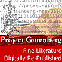

Teaching Resources
This page was started many years ago, before I had children of my own.
I have another page which I started when considering Home Education. There is overlap between the two and now I will
try to resolve and reorganise to make it clearer. Bear with me for now, I hope
something here will interest you.
Penance
In 2001 I gave a catechism class based on the St. Joseph
Baltimore Catechism No. 2 and the Green Catechism on Penance. I
thought someone might find it useful too so here it is:
penance.doc in Word 6.0 for
Windows format
Free Handwriting downloads
Have you ever bought a handwriting book and found it lacking?
The script not quite right, or the passages for copying
aren't what you would choose. Catholics might like to
have a copybook using quotes without a Protestant slant.
Here is my free alternative.
You can make your own worksheets using a handwriting font.
Mac Rhino has a
Montessori font available as a free download. Maria Montessori was an
Italian doctor who did much work teaching disabled children
then went on to work with children in poor areas whose parents
had to work. She stressed observing the children, helping them
make their own discoveries by providing attractive and well-made
materials. The Montessori script font is a simple script of
letters that lends itself to an easy transition to running
writing - rather like the foundation handwriting I was taught at
school, but Montessori's is a bit more rounded and more pleasant.
The tricky thing with a running writing font is getting
all the letters to join up. A running writing font needs
lots of ligatures, which in turn needs a sophisticated
type setting program to handle the complexities. I use
TeX for all my books, bulletins,
and letters. There are many, many, many packages available for
TeX via the Comprehensive TeX Archive Network
(CTAN
including a rather humble looking font called Lateinische Ausgangsschrift
or la for short. Search for la14.mf and you'll find it.
French Cursive is another running writing font available
from CTAN. It's a little fancier, but
see what you think.
And for those who don't have time for all that fiddling, here are the
worksheets I've made so far:
- A Montessori moveable alphabet to cut out: hollow.pdf. Page one has the vowels, page two has the consonants.
Most sets have different colours for vowels and consonants. You probably need a few copies
of page two to have a workable set.
- A Montessori alphabet to trace: alphabet.pdf
The letters are in cyan, but printed out on a black and white printer they
make a pale grey.
- Psalm 1 and 22 from the Douay Rhiems translation in Lateinische Ausgangsschrift with lines:
psalms.pdf
- Psalm 2 from the Douay Rhiems translation in French Cursive
with coloured lines: psalm2.pdf
- Quinquagesima quinquagesima.pdf
Paraphrase of the gospel about the healing of a blind man in large script.
- Ash Wednesday ashes.pdf
- First Sunday in Lent lent1.pdf
- Second Sunday in Lent lent2.pdf
- 13th Sunday after Pentecost 13thsunday.pdf
with a picture from the St. Joseph Missal and a simple description in
montessori script (Ten lepers were healed. Only one said thanks.
Jesus said, 'Where are the nine?' Deo gratias means thanks be to God.
Let us thank God always. Deo gratias!)
Religious Education
 Each year its fun to try new ideas for celebrating the Church's liturgical cycle.
In 2006 we tried an advent wreath using a florist's foam wreath base and
filled with assorted cuttings from the garden including pine needle clumps,
rosemary, mint, lavender and twigs from the other fir tree that might be spruce.
The mint wilted quite a bit, but the others stayed better. The wreath
lived on our dining table, giving us extra incentive to try to avoid the clutter
that usually accumulates there. It also smelt beautiful.
The wreath needed watering about once a week. The base came with a plastic
tray to sit in snugly, but the water tended to spill over the sides when
you poured water on the foam. Watering it over the sink then taking it back
to the table when the water had had a chance to soak in helped keep the table dry.
Each year its fun to try new ideas for celebrating the Church's liturgical cycle.
In 2006 we tried an advent wreath using a florist's foam wreath base and
filled with assorted cuttings from the garden including pine needle clumps,
rosemary, mint, lavender and twigs from the other fir tree that might be spruce.
The mint wilted quite a bit, but the others stayed better. The wreath
lived on our dining table, giving us extra incentive to try to avoid the clutter
that usually accumulates there. It also smelt beautiful.
The wreath needed watering about once a week. The base came with a plastic
tray to sit in snugly, but the water tended to spill over the sides when
you poured water on the foam. Watering it over the sink then taking it back
to the table when the water had had a chance to soak in helped keep the table dry.
 In 2007 on the morning of Ash Wednesday I woke up before the children and
wondered how to mark the beginning of Lent. In Joanna Bogle's book,
A Book of Feasts and Seasons, she describes a lent calendar from her
school days. Her calendar was a simple count down of 40 squares leading up to a big
cross. But to my mind the Cross goes on Good Friday. So
in the picture you see 40 purple squares - the squares for Ash Wednesday, Holy Thursday, Good Friday
and Holy Saturday are a little bigger than the rest - interspersed with
yellow squares to mark the sundays. There's a St. Patrick's medal on St. Patrick's day, a
picture of St. Joseph for St. Joseph's day and a picture of the
Annunciation for the feast of the Annunciation. There's also a little
metal crucifix tacked to Good Friday. The children have been marking the
passing days with little coloured dots.
In 2007 on the morning of Ash Wednesday I woke up before the children and
wondered how to mark the beginning of Lent. In Joanna Bogle's book,
A Book of Feasts and Seasons, she describes a lent calendar from her
school days. Her calendar was a simple count down of 40 squares leading up to a big
cross. But to my mind the Cross goes on Good Friday. So
in the picture you see 40 purple squares - the squares for Ash Wednesday, Holy Thursday, Good Friday
and Holy Saturday are a little bigger than the rest - interspersed with
yellow squares to mark the sundays. There's a St. Patrick's medal on St. Patrick's day, a
picture of St. Joseph for St. Joseph's day and a picture of the
Annunciation for the feast of the Annunciation. There's also a little
metal crucifix tacked to Good Friday. The children have been marking the
passing days with little coloured dots.
In 2008 I looked back on last year's lenten calendar which didn't survive the year. What to do this year? Using xfig, poster and pstops I have a basic template to print and decorate and you can have it too: lentcal.pdf. Four pages with cut marks to make a long strip 8 A4 pages long and half a page high. I've just assembled mine and marked the feast days and birthdays ready for the season.
Book Reviews
Ever wonder about what books could help feed the spark of Faith
in your children? Here're a few true stories that I found good.
- Fabiola: A Tale of the Catacombs, Cardinal Wiseman - brings to
life some of the early roman martyrs, Agnes, Sebastian, Pancratius,
Erementiana, Cassius to name a few. The first few chapters are
online here.
- The Secret of the Cure D'Ars, Henri Gheon - The life of St.
John Vianney written for children by a top writer.
- Flame of White, William Hunermann - a life of Pope St. Pius X.
My copy is translated from the German by M. Ida Adler, Ursuline of
the Roman Union. Its a beautiful book about a boy called
Beppo.
- The Saga of Citeaux, M. Raymond O.C.S.O. - the beginnings of
the Trappists, in the Cistercian order. I have just the first two
volumes: Three Religious Rebels and the Family that Overtook
Christ. The first tells the story of St. Robert of Molesmes, St.
Alberic and St. Stephen Harding. The second tells the story of St.
Bernard of Clairvaux, his mother, Blessed Alice, his father,
Venerable Tescelin, sister, Blessed Humbeline and his five
brothers, Blessed Guy, Blessed Gerard, Blessed Andrew, Blessed
Bartholomew and Blessed Nivard. I haven't found any further volumes
in the series.
- Story of a Soul, St. Therese of the Infant Jesus - I hope
everyone knows this one already, a beautiful and deep book. Well
worth rereading.
- The Trapp Family Singers, Maria Augusta von Trapp - This may
seem a little out of place at first sight for those of you
accustomed to the famous musical, the Sound of Music. The von
Trapps were a devoutly Catholic family and they ended up
homeschooling too.
There's another book written by Maria von Trapp that looks very
interesting from a homeschooling viewpoint - Around the Year with
the Trapp Family. It's all about keeping a family together through
traditions and especially music (music included). Its available
from Trinity Communications or online text version or
zipped
version through the EWTN library.
-
Another book by Maria von Trapp - When the Carpenter was King.
A book describing Jesus' childhood. It's a difficult topic
to find good things on because of all the protestant junk against
Mary's perpetual virginity. This is really faithful to the Church
and really well researched with a bibliography in the back
including Bp. Alban Goodier's Life of Our Lord, Frank Sheed's
To Know Christ Jesus, so you can see she's drawing on the best.
Lots of interesting things about home life at the time - should make
you appreciate washing machines and fridges.
There are also the famous Narnia Chronicles. I was reading the
Silmarillion bu J.R.R. Tolkein and I thought that excerpts from the
first chapters might be good for older children learning about
Angels and the Fall.
J. R. R. Tolkien wrote another children's book - Roverandom.
It wasn't published until after he died. A story about
a dog turned toy by a sorceror.
Wondering where on earth to find out of print books? Have you tried ABEbooks? They have the biggest range of second hand books I've ever come across. Amazon also has a used books section. Failing that you might try ebay, but their auction system can be frustrating. Some places have books you can download and print yourself. The first was Project Gutenberg. There are lots of others.

Phonics
It seems like this is what you start with. I've heard over and over again
how Phonics are so important, but where to start? Do I really have to
buy text books for something that seems so elementary?
I've seen great books available from Quantum Literacy or Nutshell Products.
I have Sound Start by Barbara Dykes, Word Building by Gavin Swallow
and Why We Speak English by Sarah Ward. I don't use the books nearly as
much as I thought I would, but its early days yet. There's a warm fuzzy
feeling supporting small Australian publishers.
I found the National Right to Read Foundation
to be very helpful on this count. In particular they provide a
Phonics Primer
in pdf form ready to print.
Light educational ministries
has been recommended to me. I really don't like their web page though.
That being said they have a very thorough approach to learning all the
phonograms and some christian content (protestant, may need to edit).
Montessori schools have a different take on teaching phonics.
Since Maria Montessori was Italian, and Italian is a phonetic
language, the children just learnt the letters and their sounds
and could read everything. No weird spellings like we have in english.
The english versions teach a one to one mapping of sounds to letters
and let the children put the sounds together to make up their own words
without worrying about correct spelling. That appeals to me.
Though I did consider switching to an all italian speaking home.
Mathematics
We've been using the Maths Enhancement Program from the
Centre for Innovation
in Maths Teaching.
Its quirky enough to keep interesting and its free. Looks nice and organised.
Its arranged for a 36 week year so gives 4 weeks swing in the Australian 40
week system.
Just recently it has been going into place value using 1c and 10c pieces.
Unfortunately Australian currency has phased out 1 cent coins so I was searching
for some alternative. Here are some printable Australian coins. 1c and 2c coins were
minted in copper. 5c, 10c, 20c and 50c in silver.
-
a page of 1c coins 10x14 designed for printing on an a4 page.

-
a page of 10c coins 8x11

Penmanship
From the previous paragraph you might guess that I like the
Montessori font too which is available for free from
macrhino.com.
I have some more musings on handwriting on my
Teaching Resources
page.
Literature
After the huge kerfuffle over Lord of the Rings I started reading
Tolkien. I was intrigued by his thoughts on Fairy Stories and the
importance they have in forming our minds. Pardon me if I get this wrong
but I remember a quote from Einstein that if you want your kids to be smart,
read them fairy tales; if you want them to be really smart, read them
lots of fairy tales.
Again, how do I go about putting this into practice? It seems
that popular culture has a tendency to hijack fairy tales to serve
its own adgenda. Michael O'Brien in his book A Landscape with Dragons
warns against Walt Disney's adaptations. It seems the consensus
is that Andrew Lang's
collections of Fairy Stories are a good start.
The Blue Fairy Book is
the first of about a dozen volumes.
Delving into homeschooling one is sure to come across the concept
of Great Books. Perhaps you'll come across them in connexion with
Charlotte Mason.
For a book worm like myself, recommended reading lists are very attractive.
The Angelicum Academy provides The Good Books List (in print)
taken from John Senior's list. Some of these books are available through
Project Gutenberg as free to
copy, print, etc text files.
Reading to the children at bed time has become a regular thing now.
We had been using recorded stories, but you can have much more
variety with good old fashioned Books. Reading out aloud takes a
bit of getting used to, but it does become enjoyable. I was a speed
reader, so I took a while to adjust. Now the boys can respond to
the stories it is that much more rewarding. My favourite books at the moment
are, the Little Bookroom, by Eleanor Farjeon (a collection of some beautiful
fairy stories that she pieced together from memories of a childhood
of many stories); The Back of the North Wind, by George MacDonald
and all the Beatrix Potter stories.
Latin
I'm looking forward to learning Latin one day. No, I've never formally
studied latin.
Latin in the Christian Trivium
has impressed me most so far, but I still haven't bought their texts.
They do have a free newsletter with interesting bits and pieces
on teaching Latin.
One thing I have noticed is the order of the declensions
of the nouns is different in the Seton and Christian Trivium
books compared to the standard Latin text from here in
Australia, THe Approach to Latin, Paterson and Macnaughton.
The lists in Paterson and Macnaughton run:
- Nominative
- Vocative
- Accusative
- Genitive
- Dative
- Ablative
Whereas the Seton and Christian Trivium book give:
- Nominative
- Genitive
- Dative
- Accusative
- Ablative
I'm more used to the first system, it rolls off my tongue
more easily. Try saying: mensa, mensa, mensam; mensae, mensae, mensa;
mensae, mensae, mensas; mensarum, mensis, mensis.
Then try: mensa, mensae, mensae, mensam, mensa;
mensae, mensarum, mensis, mensas, mensis. I bounce along the former,
with its repetitions, but the second I don't catch the rhythm.
I've since discovered the former is the English way, the latter the
American way.
A free Latin course geared towards adults is available from
the Latin Mass Society in the UK. It's called Simplicissimus and
comes with answer keys, vocabulary lists, revision puzzles.
Its grounded in the Missal so being familiar with the Latin Mass
is a big bonus using this text. Makes for a Latin by immersion -
your local latin Mass provides the immersion and this course puts the
pieces together.